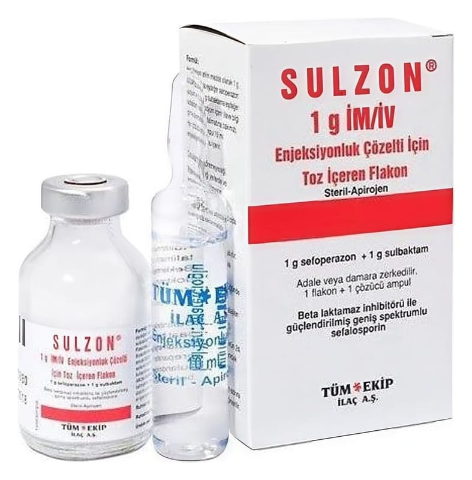

Sulzon 1 g IM/IV Enjeksiyonluk Çözelti Hazırlamak İçin Toz, 1 Adet, 1 Ampul

Ne için kullanılır
KT · Bölüm 1SULZON bir antibiyotiktir. Her flakon 1 gram sulbaktam (sulbaktam sodyum şeklinde) ve 1 gram sefoperazon (sefoperazon sodyum şeklinde) olmak üzere (141) toz halinde iki etkin madde içermektedir. Yardımcı madde içermez. Bir flakon ve 10 ml enjeksiyonluk su içeren | bir çözücü ampulden oluşan ambalajlarda sunulmuştur. Etkin maddelerden sefoperazon sodyum üçüncü kuşak sefalosporin adı verilen gruba dahil antibiyotik, sulbaktam sodyum ise bir penisilin türevidir. SULZON belirli mikropların neden olduğu aşağıdaki iltihap oluşturan mikrobik hastalıkların (enfeksiyonların) tedavisinde kullanılır: . Üst ve alt solunum yolu enfeksiyonları * Üst ve alt idrar yolu enfeksiyonları | * Karın zarı iltihabı (peritonit), safra kesesi iltihabı (kolesistit), safra yolları iltihabı (kolanjit) | ve diğer karın boşluğu enfeksiyonları * Bakterilerin kana geçmesi sonucunda ateş ve titremeye neden olan hastalık (septisemi) | * Beyin zarı iltihabı (menenjit) | * Cilt ve yumuşak doku enfeksiyonları | * Kemik ve eklem enfeksiyonları | 1 | | | |
ARR | İ | | * Kadın iç üreme organlarının yer aldığı kemik çatının içindeki organların enfeksiyonu, rahim iç duvarında iltihap (endometrit), bel soğukluğu ve cinsel bölge enfeksiyonları. Birlikte tedavi endikasyonu mevcut ise, SULZON diğer antibiyotiklerle beraber kullanılabilir.